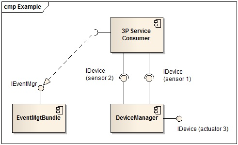

API Definition
In order to use the Device Management feature, a Third Party service should use two interfaces provided by two components of the Societies platform.
- IDevice interface (provided by the Device Management bundle): used to be informed about the type of a newly discovered device.
- IEventMgr interface (provided by the Event Management bundle): used to be informed of new data from drivers.
The IDevice interface shall be tracked directly from the OSGi service registry while the IEventMgr interface is bound through the Spring Service reference declared in the bundle-context-osgi.xml file. Figure 31 shows an example of a system where three devices are connected to the CSS nodes. The drivers and devices are not represented in the picture. In this case, the Third Party Service Consumer has bound two IDevice interfaces out of the three available.

The Device Management model is exposed in the extenal APIs, in the package org.societies.api.css.devicemgmt.model.
The Device model is used in order to represent all the necessary information that describes the situation of a CSS entity or a group of entities that form a CIS. In more detail, the model consists of the following main classes:
- DeviceMgmtConstants: This class contains property key constants used when registering IDevice services. All these properties are provided by the DeviceManager when it registers a new IDevice service. These property keys can be used by the consumer of the service as an LDAP filter to refine the set of Device services it is interested in being notified about. The LDAP Syntax of the filter is as per OSGi specifications, which in turn are based on the RFC 1960.
- DeviceTypeConstants: This class defines static strings identifying the type of devices that should be integrated in the User Trials. For instance: "public static final String SCREEN = "screen";".
- DeviceMgmtEventConstants: This class defines constants used to define a topic in which events of a given type, related to a specific device type, are sent. For instance: "public static final String SCREEN_EVENT = "actuator/screenEvent";".
- DeviceMgmtDriverServiceNames: This class defines constants used to get the driver service name object which will be used to invoke actions on the associated devices type. For instance: public static final String SCREEN_DRIVER_SERVICE = "actuator/screenDriverService";.
- DeviceActionsConstants: this class does not exist yet. It is used to provide the list of actions implemented by a device type.
All these classes defining constants should be shared among the driver developer(s) and the Third Party Service developer(s) so that both parties rely on a consistent semantic model describing the informations related to the given device.
Future revisions of the Device Management model will address the issues related to the fact that a Semantic metamodel has not been defined yet, thus forcing the developer (both Driver's and Third Party) to rely on hard-coded constants to distinguish which type of Device, Event, Service or Action a given event deals with.